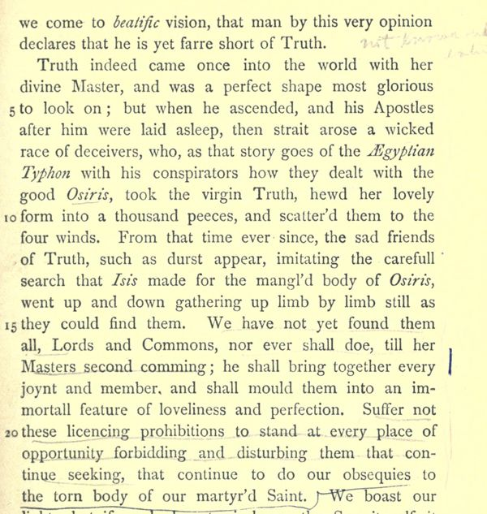

“Hewd her lovely form into a thousand peeces”
English: Hales’s edition, p. 43, lines 3–23, scan. Spelling of 1644. Highlighted: Lecky’s quotation.

… that man by this very opinion declares that he is yet farre short of Truth.
Truth indeed came once into the world with her divine Master, and was a perfect shape most glorious to look on; but when he ascended, and his Apostles after him were laid asleep, then strait arose a wicked race of deceivers, who, as that story goes of the Ægyptian Typhon with his conspirators how they dealt with the good Osiris, took the virgin Truth, hewd her lovely form into a thousand peeces, and scatter’d them to the four winds. From that time ever since, the sad friends of Truth, such as durst appear, imitating the carefull search that Isis made for the mangl’d body of Osiris, went up and down gathering up limb by limb still as they could find them. We have not yet found them all, Lords and Commons, nor ever shall doe, till her Masters second comming; he shall bring together every joynt and member, and shall mould them into an immortall feature of loveliness and perfection. Suffer not these licencing prohibitions to stand at every place of opportunity forbidding and disturbing them that continue seeking, that continue to do our obsequies to the torn body of our martyr’d Saint.
Lecky’s text is modernised (“straight”, “hewed”, “pieces”) and has “as the story goes” for Milton’s “as that story goes”.
Backlinks
Every place in Rationalism in Europe that links to this page (generated automatically when the site is built).
- Chapter IV, Part II: note 90